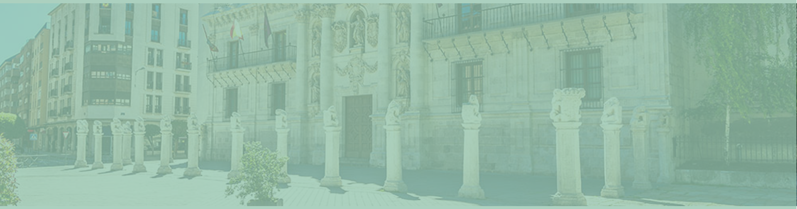
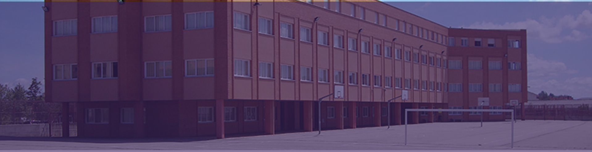
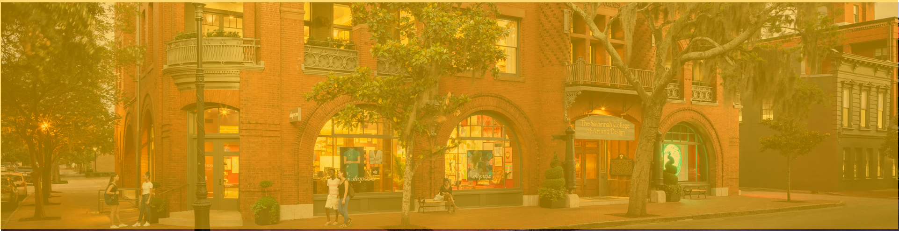
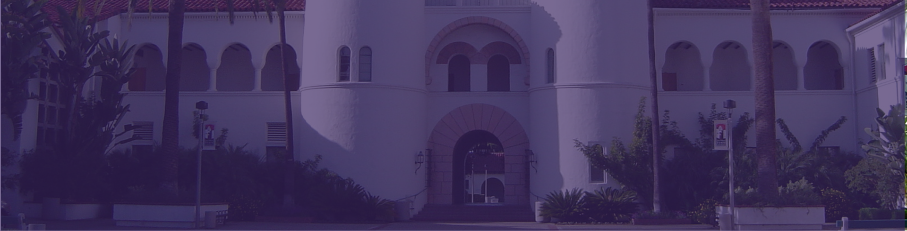
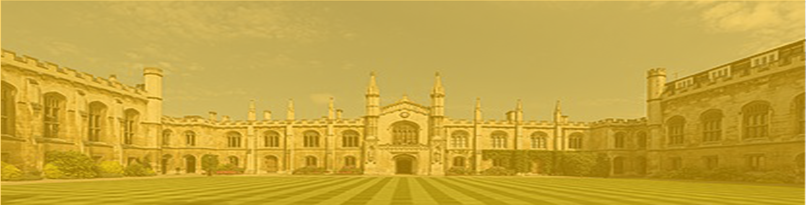

Universidad de Valladolid
Es una universidad pública española, situada en la ciudad de Valladolid. Fue fundada en el año 1241, lo que la convierte en la tercera universidad más antigua de España, por detrás de la Universidad de Palencia y la Universidad de Salamanca. No obstante, se reclama la más antigua de España de acuerdo con la tradición de ser la vallisoletana la misma institución que el Estudio General de Palencia o Universidad de Palencia, trasladada entre 1208 y 1241 a la ciudad de Valladolid. Imparte estudios de grado y postgrado en distintas áreas de conocimiento.
Colegio Escolapios de Soria
Es una universidad pública española, situada en la ciudad de Valladolid. Fue fundada en el año 1241, lo que la convierte en la tercera universidad más antigua de España, por detrás de la Universidad de Palencia y la Universidad de Salamanca. No obstante, se reclama la más antigua de España de acuerdo con la tradición de ser la vallisoletana la misma institución que el Estudio General de Palencia o Universidad de Palencia, trasladada entre 1208 y 1241 a la ciudad de Valladolid. Imparte estudios de grado y postgrado en distintas áreas de conocimiento.
UIC Barcelona
La Universitat Internacional de Catalunya comenzaba oficialmente sus actividades académicas en octubre de 1997. La Ley Orgánica 11/1983 de Reforma Universitaria (LRU) junto con la Ley 26/1984 del Parlamento de Cataluña ofrecieron el marco jurídico adecuado para promover una universidad con capacidad para otorgar títulos oficiales. La Fundación Familiar Catalana tomó la responsabilidad de elaborar el proyecto académico.
Australian Option
Es una agencia líder en educación en Australia. Oportunidad en el exterior con representantes oficiales de las principales universidades, centros de idiomas y escuelas vocacionales australianas.
Global Eduoptions
Representantes de las mejores instituciones educativas a nivel internacional, caracterizadas por su excelencia y compromiso. Su objetivo es brindar una asesoría objetiva e integral y es por esto por lo que cuentan con consultores académicos expertos en diferentes sistemas educativos, programas de estudio y tramites de cada uno de los destinos en los cuales trabajamos.
SCAD
Representantes de las mejores instituciones educativas a nivel internacional, caracterizadas por su excelencia y compromiso. Su objetivo es brindar una asesoría objetiva e integral y es por esto por lo que cuentan con consultores académicos expertos en diferentes sistemas educativos, programas de estudio y tramites de cada uno de los destinos en los cuales trabajamos.
Progrentis
Es una herramienta digital online de entrenamiento ocular y cerebral a través del juego, cuyo objetivo es ampliar la velocidad y la comprensión lectora.
Universidad de San Diego
Este punto de vista informa cómo vemos el mundo. Más que imaginar, pero empoderarlo, involucrarlo y aceptarlo. Perseguir la paz y el beneficio. Desenfoque de fronteras y límites. La ciencia y el espíritu se unen. La Universidad de San Diego. Terrenos de perspectiva infinita. Al borde de un futuro mayor, solo visto desde aquí.
Universidad de Cambridge
La Universidad de Cambridge es una universidad pública inglesa situada en la ciudad de Cambridge, Inglaterra, Reino Unido. Fue fundada en 1209 y el rey Enrique III de Inglaterra le otorgó una Carta Real en 1231. Cambridge es la segunda universidad más antigua de habla inglesa y la cuarta más longeva que sigue abierta.
